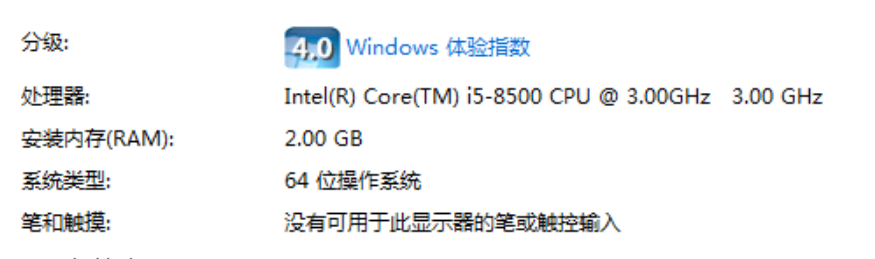
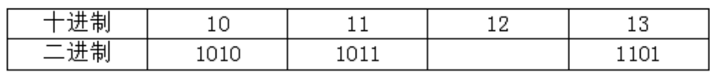

解析：
1. A 正确：处理器一栏中 3.00GHz 是 CPU 的主频。
2. B 错误：i5-8500 是 Intel CPU 型号，和硬盘转速无关。
3. C 正确：系统类型明确显示为 64 位操作系统。
4. D 正确：安装内存（RAM）为 2.00GB。
答案解读
3.杀毒软件对于计算机安全至关重要，下列关于杀毒软件的说法，正确的是（ ）。
解析：
A 错误：新病毒不断出现，只查一次不能永久免疫，必须定期升级。
B 正确：杀毒软件需要经常更新病毒库，才能识别最新病毒，保障安全。
C 错误：查杀病毒是清理恶意程序，不会重装系统，二者完全不同。
D 错误：查杀出来的可能是可疑文件、风险程序，不一定都是病毒。
答案解读
4.下列目录中，不可以同时存放两个相同类型且文件名相同的文件是（ ）。
解析：
A 正确：在**同一个文件夹（同一目录）**里，不允许存在文件名完全相同的两个文件。
B、C、D 错误：只要不在同一个目录下，即使文件名相同，系统也可以正常区分和保存。
答案解读
5.某计算机的部分配置信息如下图所示，从中不能获取的信息是（ ）。

解析：
A 选项：图中没有任何关于硬盘容量的信息，因此无法获取。
B 选项：从 “处理器” 一栏可以获取 CPU 型号为 Intel(R) Core(TM) i5-8500。
C 选项：从 “处理器” 一栏可以获取 CPU 主频为 3.00GHz。
D 选项：从 “安装内存 (RAM)” 一栏可以获取内存容量为 2.00 GB。
答案解读
6.下列关于计算机解决问题的说法，正确的是（ ）。
解析：
A 错误：计算机按程序执行，与人的思维过程不同。
B 错误：计算机没有自主创造能力，只能按指令执行。
C 正确：计算机必须按照设定的步骤、算法来解决问题。
D 错误：计算机只有精确、逻辑化的执行方式，没有模糊、跳跃思维。
答案解读
7.下列事例中，主要体现信息 “真伪性” 特征的是（ ）。
解析：
A 错误：结绳记事体现信息的**载体依附性**。
B 正确：空城计是故意传递虚假信息，体现信息的**真伪性**。
C 错误：飞鸽传书体现信息的**传递性**。
D 错误：烽火告急体现信息的**传递性**。
答案解读
8.通过下表可以推测 12 的二进制数为（ ）。

解析：十进制数 12 转换成二进制是 1100，因此选 D。
答案解读
9.以下不属于计算机外存储设备的是（ ）。
解析：
A 答案内存条属于**内存储器**，硬盘、U盘、光盘都属于外存储设备。
答案解读
10.在计算机中，可以使用 16 个二进制位来表示（ ）。
解析：
A 正确：一个汉字通常用 16 个二进制位（2 字节）表示。
B 错误：1 个字节 = 8 个二进制位。
C、D 错误：一个数字或字母一般只占 1 字节（8 位）。
解析：
A 错误：222.73.220.176 是目标域名的IP，不是本机IP。
B 错误：ping 命令需要联网才能和目标服务器通信，无网络无法得到结果。
C 正确：从 “正在 Ping www.ebay.cn [222.73.220.176]” 可确定该域名对应的IP是222.73.220.176。
D 错误：ping 命令后可输入域名，也可直接输入IP地址。